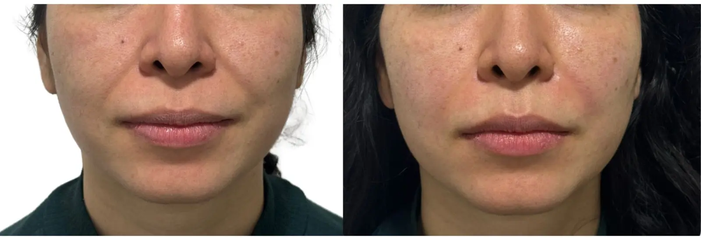
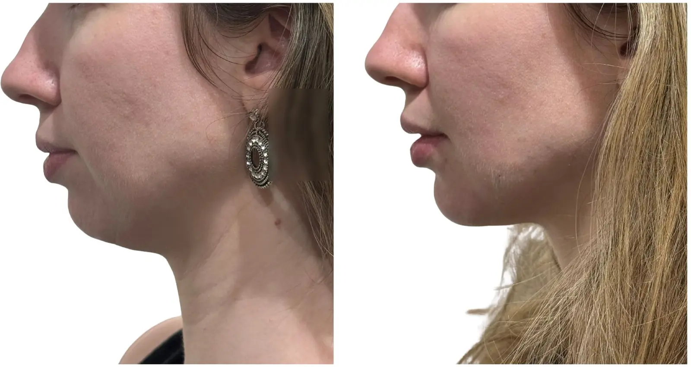

Movimento
A toxina botulínica pode suavizar a contração em áreas selecionadas, preservando expressão quando bem indicada.
Toxina botulínica, preenchedores e bioestimuladores não são versões do mesmo tratamento. A avaliação identifica a causa da queixa, define prioridades e também considera aplicar menos ou não intervir naquele momento.
Atendimento na Clínica LIV Faria Lima, em Pinheiros. A equipe informa agenda e próximos passos pelo WhatsApp.

Linhas de expressão, perda de suporte, assimetrias e qualidade da pele exigem estratégias diferentes. O diagnóstico vem antes da seringa.
A avaliação diferencia movimento muscular, perda ou distribuição de volume, qualidade da pele e alterações estruturais.
A toxina botulínica pode suavizar a contração em áreas selecionadas, preservando expressão quando bem indicada.
Preenchedores podem acrescentar suporte ou refinar proporções com volumes planejados para cada anatomia.
Bioestimuladores podem estimular colágeno de forma gradual, conforme espessura dos tecidos, flacidez e objetivo.
Abra cada opção para entender o raciocínio geral. Produto, dose, pontos e combinações só são definidos após avaliação.
Quando a contração muscular contribui para linhas de expressão ou desequilíbrios específicos.
Reduzir seletivamente a força de alguns músculos, mantendo movimento compatível com naturalidade.
Não repõe volume, não trata toda flacidez e não substitui cirurgia quando há indicação estrutural.
Dose, pontos e intervalo são individualizados conforme anatomia, expressão e resposta prévia.
Quando existe perda de suporte, assimetria ou uma proporção que pode ser refinada sem exagero.
Acrescentar suporte ou volume em pontos definidos, respeitando traços, pele e equilíbrio do rosto.
Não deve padronizar feições nem ser usado para perseguir volumes sem relação com a anatomia.
Área, produto, plano de aplicação e quantidade dependem do exame e do objetivo compartilhado.
Quando o objetivo é melhorar gradualmente qualidade, firmeza ou espessura dos tecidos em áreas selecionadas.
Estimular resposta de colágeno ao longo do tempo, sem depender de uma mudança volumétrica imediata.
Não corrige toda flacidez e não substitui cirurgia quando o excesso de pele ou a queda são estruturais.
Produto, diluição, plano, número de sessões e manutenção variam conforme área e qualidade dos tecidos.
O plano considera o rosto parado e em movimento, histórico de tratamentos, anatomia, prioridades, riscos e manutenção.
Injetáveis não devem começar pela escolha de um produto. Como cirurgiã plástica, a Dra. Amanda avalia músculos, volumes, sustentação, pele e pescoço em conjunto para distinguir o que pode melhorar com uma aplicação do que exige outra estratégia.
A leitura considera estruturas profundas e superficiais, o rosto parado e em movimento e como cada intervenção pode alterar proporções e expressão.
Por conhecer opções cirúrgicas e não cirúrgicas, a avaliação pode concluir por injetáveis, cirurgia, tratamento em etapas ou nenhuma intervenção naquele momento.
Histórico de saúde, medicamentos, produto, procedência, técnica e possíveis intercorrências fazem parte do planejamento — antes, durante e depois da aplicação.
Dermatologistas também são médicos especialistas e podem ter excelente formação em injetáveis. O diferencial da cirurgia plástica é integrar, na mesma avaliação, possibilidades cirúrgicas e não cirúrgicas. Esteticistas têm outro campo de atuação: sua formação não substitui avaliação médica e, segundo a Anvisa, suas atividades não incluem o uso de medicamentos.
As consultas acontecem na Clínica LIV Faria Lima, em Pinheiros, próxima à Estação Pinheiros do metrô e com estacionamento pago no local.
As imagens ajudam a observar proporção e suporte. Produto, quantidade, indicação e resposta variam; nenhum resultado representa promessa individual.

Resultado individual apresentado para discutir suporte, proporção e limites de indicação.

O queixo é avaliado em relação aos lábios, mandíbula, nariz e restante da face.

Volume e projeção são planejados conforme anatomia, tecidos e objetivo compartilhado.
Imagens autorizadas, com finalidade educativa. Resultados variam conforme anatomia, produto, técnica, quantidade aplicada, resposta individual e cuidados posteriores. Intercorrências e insatisfação são possíveis.
Não. A toxina botulínica atua principalmente na contração muscular. Os preenchedores acrescentam suporte ou volume em pontos selecionados. A indicação depende da causa da queixa.
A toxina botulínica costuma apresentar efeito progressivo nos dias seguintes. Preenchedores mostram mudança inicial logo após a aplicação, com avaliação definitiva depois que o edema reduz. Bioestimuladores têm resposta gradual.
A duração varia conforme produto, área tratada, dose, metabolismo, anatomia e objetivo. Na consulta são discutidos manutenção e limites de cada tratamento.
Em casos selecionados, sim. A combinação pode tratar movimento, proporção e qualidade da pele em etapas ou na mesma sessão, conforme segurança e prioridade.
Pode ocorrer vermelhidão, sensibilidade, edema ou equimoses. A intensidade e o tempo de recuperação variam conforme a técnica, a área e a resposta individual.
A avaliação considera histórico de saúde, medicações, anatomia, produto, técnica, assepsia e plano para reconhecer e tratar possíveis eventos adversos.
A equipe orienta formato de consulta, disponibilidade, nota fiscal e próximos passos.
A equipe entende sua queixa e sua prioridade.
Você recebe informações sobre consulta e agenda.
A Dra. Amanda diferencia procedimentos, combinações, limites e próximos passos.
Converse com a equipe para receber disponibilidade e orientação sobre o primeiro atendimento. A indicação só é definida após avaliação médica.